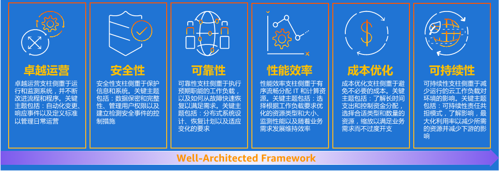

云咨询与战略
在当今快速变化的技术环境中，企业为了保持竞争力，必须认真对待云策略。我们的云咨询与战略服务专为小型和中型企业（SMB）设计，致力于帮助他们制定和实施有效的云战略。
2.1 评估云适应性
根据上云动机对业务进行分类：若已有业务从线下迁移至云上，称为“业务迁移上云”；若新业务首发即在云上部署，称为“业务创新上云”。
业务迁移上云（典型目标）
- 加速资源交付：云上资源近乎实时交付，显著缩短传统IDC的采购周期。
- 降低成本：由Capex转为Opex按量计费，减少一次性投入并按需购买。
- 获取最新技术：云原生中间件、容器等能力可快速采用。
- 提升安全性：依托云厂商的大规模在线安全能力，更好地应对互联网攻击。
业务创新上云（典型目标）
- 快速获取创新能力：IoT、大数据、AI/中台等PaaS、SaaS能力开箱可用。
- 更快进入新市场：弹性扩缩容、全球可达，支持业务快速试错与迭代。
过程与方法
- 现状分析：全面分析硬件/软件/网络与业务流程，定位性能与效率瓶颈。
- 云适应性评分：从性能、可扩展性、安全与合规等维度量化评估与分级。
- 业务影响分析：对齐业务优先级，优先迁移可最大化业务价值的工作负载。
2.2 制定云战略
组织与治理准备
- 企业管理层：明确云在企业战略中的定位与目标。
- 云卓越中心（虚拟组织）：
架构/技术人员负责上云架构与迁移，安全/合规专家制定治理与风控，财务专家定义成本分摊与预算流程。
- 云管理团队：建设云上运维体系与自动化平台，持续优化架构与资源交付（资产/权限/自动化）。
战略制定流程
- 业务需求对齐：围绕降本、灵活性、创新力等目标形成一致共识。
- 迁移路线图：
短期（快速见效）、中期（规模化迁移）、长期（技术与基础设施演进）。
- 云服务模型选择：结合财务、合规、性能选择公有云/私有云/混合云。
2.3 实施最佳实践
最佳实践框架
持续改进与赋能
- 持续反馈与调整：基于运行数据与使用反馈，滚动优化架构与治理策略。
- 培训与知识转移：体系化培训，确保团队具备独立管理与优化云环境的能力。
我们提供端到端的咨询与战略落地支持，帮助企业在云环境中实现转型与创新。
六大支柱核心解析

Well-Architected Framework 六大支柱
卓越运营：关注自动化运营、持续改进流程与标准化管理日常云运维。
安全性：强化信息机密与完整性，涵盖身份权限、审核追踪、主动防护与威胁检测。
可靠性：强调容量规划、分布式设计、自动容错，保障业务不中断。
性能效率：选择最适合业务场景的服务、实例与架构，持续进行性能与资源优化。
成本优化：透明计费、支出追踪与预算管控，最大化云资源性价比。
可持续性：最大限度利用云端绿色资源，减少碳排放，助力企业可持续发展。